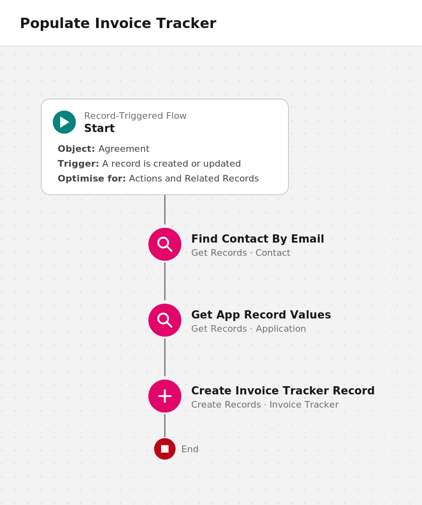
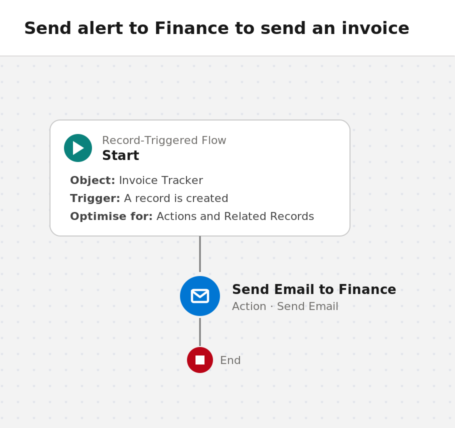
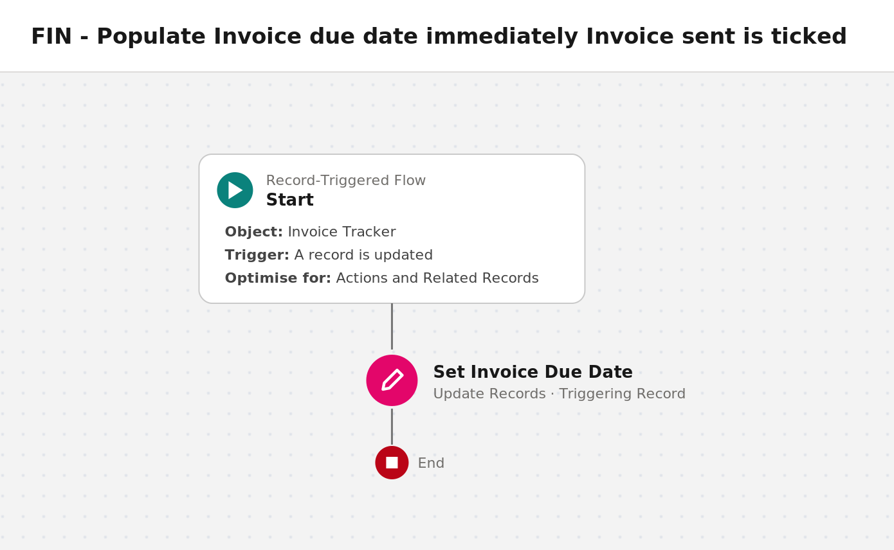
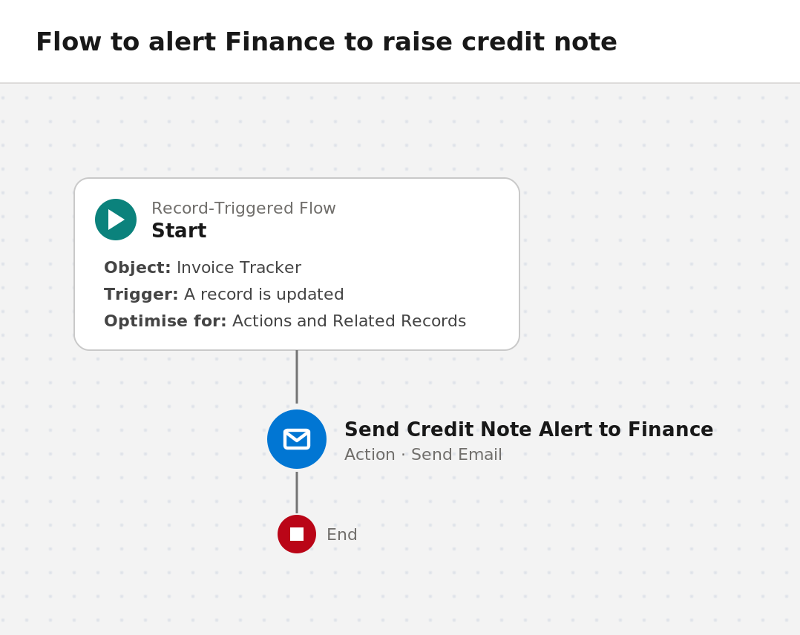
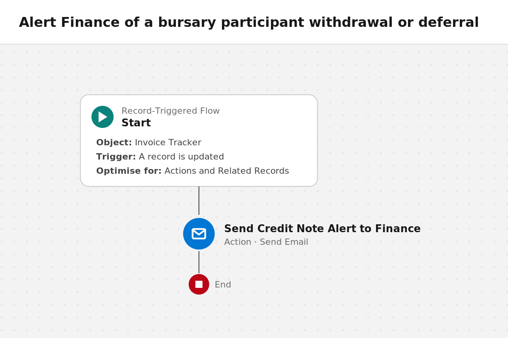

The challenge
Programme fees are invoiced by the Finance team, but the information they need lives with the Programmes team: who has signed an agreement, which organisation to invoice, who is on a bursary and who has withdrawn. The invoice tracker was compiled by hand, Finance was told about new invoices by ad-hoc emails, and withdrawals or deferrals after an invoice had gone out were not always flagged, so credit notes could be missed.
The approach
I made the Invoice Tracker object the shared source of truth between the two teams and automated each hand-off:
- Populate: A tracker record is created from the signed participant agreement, enriched from the application.
- Notify: Finance is emailed when a new participant needs invoicing, with bursary and partner places excluded.
- Schedule: The payment due date is set automatically the moment an invoice is marked as sent.
- Sync: Participant status changes on the Contact flow through to the tracker, with fallbacks and an alert if no record is found.
- Protect: Finance is alerted to raise a credit note when an invoiced participant withdraws or defers.
- Protect: Finance is alerted when a bursary participant withdraws or defers.
Build the invoice tracker from the signed agreement
Flow: Populate Invoice Tracker

The problem
Invoice details were copied by hand from two places, the application and the participant agreement, which was slow and error-prone.
What the flow does
When a participant agreement for one of the in-scope leadership programmes is created or updated with an email address, the flow finds the Contact and the matching application, then creates an Invoice Tracker record with name, email, organisation, invoice address, programme, discount code, bursary flags and corporate partner status.
Design highlights
Layered fallbacks: the participant lookup is taken from the agreement, then the application, then the Contact; the organisation from the application, then the Contact. Formulas default safely when no application is found. Scoped to the relevant record types only.
The invoice tracker builds itself from the signed agreement. Invoice details are no longer copied by hand from the application and the agreement.
Tell Finance when a new invoice is needed
Flow: Send alert to Finance to send an invoice

The problem
Finance relied on ad-hoc emails from the Programmes team to know who to invoice.
What the flow does
When a new Invoice Tracker record is created, Finance receives a branded “New Participant To Invoice” email with the details they need.
Design highlights
Entry conditions exclude participants on a bursary, on a named bursary or applying through a corporate partner, so Finance is only asked to invoice fee-paying participants.
Finance is told about every fee-paying participant as soon as the signed agreement reaches Salesforce, and is never asked to invoice a bursary or partner place.
Set the payment due date automatically
Flow: FIN - Populate Invoice due date immediately Invoice sent is ticked

The problem
Due dates were entered inconsistently, which made chasing overdue invoices unreliable.
What the flow does
The moment Finance ticks Invoice Sent, the flow sets the due date to 30 days ahead.
Design highlights
A formula moves the date to the following Monday when 30 days lands on a Saturday or Sunday, so every due date is a working day.
Every sent invoice gets a consistent due date on a working day, so overdue invoices can be chased reliably.
Keep invoice status in step with the participant
Flow: Update Invoice Tracker Participant Status as Contact Status Changes

The problem
When a participant’s status changed (for example to withdrawn or deferred), the tracker did not reflect it, and the earlier version of this flow failed silently whenever the tracker was not linked to the Contact.
What the flow does
When a Contact’s participant status changes, the flow finds the Invoice Tracker by Contact and programme and updates the status. If that fails, it falls back to email, name and programme, updates the status and back-fills the missing Contact link. If no tracker exists at all, it emails the programme lead.
Design highlights
Rebuilt as a more resilient replacement for the original flow: two-tier matching, self-healing data (it repairs the missing lookup), fault paths routed to an alert rather than an error, and no silent failures.
The tracker always reflects the participant’s current status. Missing links repair themselves, and a missing tracker record raises an alert instead of failing silently.
Prompt a credit note when an invoiced participant leaves
Flow: Flow to alert Finance to raise credit note

The problem
Withdrawals and deferrals after an invoice had gone out were not reliably passed to Finance, so credit notes could be missed.
What the flow does
When an Invoice Tracker record changes to Application Withdrawn, Programme Withdrawn or Deferred, the invoice has been sent and no credit note has been issued, Finance receives an alert with the invoice number and payment status.
Design highlights
Filter logic (1 OR 2 OR 3) AND 4 AND 5 makes the alert precise. Formulas present the invoice number (or “N/A”) and paid status in plain language so Finance can act straight away.
Withdrawals and deferrals after invoicing now always reach Finance for a credit note, with the invoice number and paid status in the alert.
Flag bursary withdrawals and deferrals
Flow: Alert Finance of a bursary participant withdrawal or deferral

The problem
Bursary places are funded rather than invoiced, so a withdrawal needs a different response from Finance, and these cases were easy to overlook.
What the flow does
When a participant on a bursary or a named bursary withdraws or defers, Finance is alerted so the funding can be reallocated or adjusted.
Design highlights
Filter logic (1 OR 2 OR 5) AND (3 OR 4) combines status and bursary type in one clean entry condition, keeping it separate from the fee-paying credit note flow.
Bursary withdrawals and deferrals reach Finance every time, so funding can be reallocated or adjusted, and they never get mixed up with fee-paying credit notes.
What changed for Programmes and Finance
Outcomes follow directly from what the flows do in the live org; the figures are the flows’ own settings.
| Before | After the flows went live |
|---|---|
| The invoice tracker was compiled by hand, copying details from the application and the agreement. | The tracker builds itself from the signed agreement, enriched from the application. |
| Finance was told about new invoices by ad-hoc emails. | Finance is told about every fee-paying participant as soon as the signed agreement reaches Salesforce; bursary and partner places are excluded. |
| Due dates were entered inconsistently, so overdue chasing was unreliable. | Every due date is set the moment the invoice is sent, and always lands on a working day. |
| Withdrawals or deferrals after invoicing were not always flagged, so credit notes could be missed. | Withdrawals after invoicing now always reach Finance for a credit note; bursary withdrawals are flagged separately. |
| The earlier status flow failed silently when the tracker was not linked to the Contact. | No silent failures: missing links are repaired automatically, and a missing record raises an alert. |
Diagrams are drawn from each flow’s live metadata in a production org, showing every element, decision outcome and path as built. No participant data is shown, and the organisation is not named.
Download the Salesforce Flows portfolio (PDF)